Using Modules I-N
LDMMViewer module
The LDMMViewer module is tbd.
There is one tab: LDMM.
Locator module
The Locator module connects Slicer to a server that feeds a real-time stream of coordinates from a device called the locator.
This is useful in the operating room to allow the surgeon to navigate the volume by pointing to a location with a probe that is tracked.
They can use the probe to select a new plane for scanning, or to zero on on an area to scan again.
It is also used as a base for developing navigation tools for ultrasound, CT, laser ablation, and the MR Robot project.
NOTE: The Realtime module provides real-time processing of images acquired using Locator.
There are three tabs: Tracking, Server, and Handpiece.
Server tab
The Server tab lets you specify the source of the data for the Locator.
To use the Server tab:
| 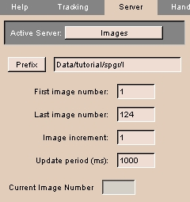 |
- Click the Server tab. The panel at left appears.
- Click Active Server to select the source of Locator data. The choices include:
- Select File to read Locator positions from a text file. Then click Prefix and select the text file to read positions from. Enter a value for the Update Period.
- Select SignaSP to read Locator positions and real-time images from a server process running on the GE Signa SP workstation.
Enter Server Connection parameters, including Host name, Port number, and Update Period.
Specify the Patient Position by selecting either Head-first or Feet-first for Entry; Supine, Prone, Left-decub, or Right-decub for Patient; and Front or Side for Table.
- Select Images to read existing images on disk to emulate real-time images coming from a Signa SP scanner. Then click Prefix and select the first image file to read images from. Enter a value for the Image increment and Update Period.
- Select Csys to display a Csys actor that indicates the position and orientation of the Locator. Click Csys to display the Csys actor.
|
Tracking tab
The Tracking tab lets you specify the source of the data for the Locator.
To use the Tracking tab:
| 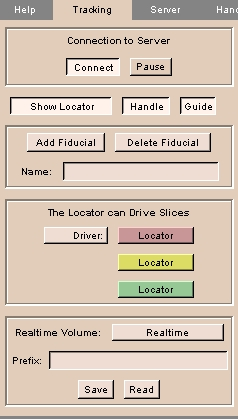 |
- Click the Tracking tab. The panel at left appears.
- Click Connect to toggle the connection to the server (chosen using the Server tab).
- Click Pause to pause the stream of data from the server.
- Click Show Locator to toggle display of the Locator in the 3D Viewer. Click Handle to toggle display of a handle at right angles to the Locator. Click Guide to toggle display of the guide from the tip of the locator.
- Click Add Fiducial to create a fiducial point at the current location.
Click Delete Fiducial to remove a fiducial point.
- In the Locator can Drive Slices area, select whether the User or the Locator will drive (position) reformatted slices.
- To save (or read from) a real-time volume, select the Realtime Volume, or enter the file Prefix and click Save or Read.
|
Handpiece tab
The Handpiece tab lets you configure the display of the Locator in the 3D Viewer.
To use the Handpiece tab:
| 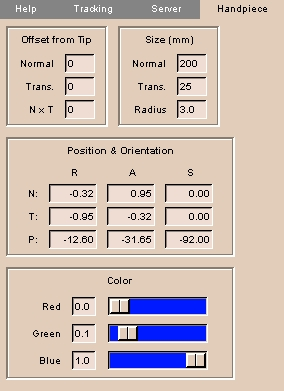 |
- Click the Handpiece tab. The panel at left appears.
- Enter the Offset from Tip values, including Normal (direction along tip of Locator's needle), Trans. (Transverse, perpendicular to the Normal along the Handle), and N x T (N cross T is a vector perpendicular to both Normal and Transverse, using the right-hand rule).
NOTE: You can use Offset from Tip to simulate a longer Locator. This can be useful if the Locator is attached to a surgical device and you want to know the location of the device rather than the location of the Locator.
- Enter the Size values, including Normal (length along tip of Locator's needle), Trans. (transverse, perpendicular to the Normal along the Handle), and Radius of the Locator.
- Enter the Position & Orientation values, giving the R (Right-left), A (Anterior-posterior), and S (Superior-inferior) coordinates for N (the Normal), T (the Transverse), and P (the cross-product of Normal and Transverse).
- Create a Color for the Locator, using Red, Green, and Blue sliders.
|
Measure module
The Measure module calculates geometric measurments on structures, including position, distance, angle, intersection, volume, and surface area.
This is useful for determining sizes of structures for diagnosis, comparison, or planning.
There is one tab: Measure.
Measure tab
The Measure tab calculates position, distance, angle, intersection, volume, and surface area for a model.
To use the Measure tab:
| 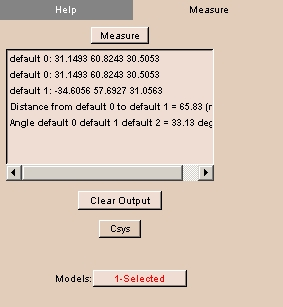 |
- The Measure module requires a model that includes fiducial points.
You can use the Fiducials module to create fiducial points for a model.
- Click the Measure tab. The panel at left appears.
- From the Models drop-down list, select a loaded model that has fiducial points.
- From the Measure drop-down menu select one of:
- Position: to determine the position of the fiducial points.
- Distance: to determine the distance between the fiducial points.
At least two fiducial points are necessary.
- Angle: to determine the angle defined by three fiducial points.
- Intersection: to determine the intersection point of two lines defined by four coplanar fiducial points.
- Volume: to determine the volume enclosed by at least four fiducial points.
- Surface: to determine the surface area of the volume enclosed by at least four fiducial points.
The calculated value of the selected measurement appears.
- To clear output from the list, click Clear Output.
|
MeasureVol module
The MeasureVol module measures the geometric volume, in milliliters, of each label within an image volume.
This is useful for making measurements.
There are two tabs: Measure and Results.
Measure tab
The Measure tab lets you specify the volume to measure and an output file for the results.
To use the Measure tab:
| 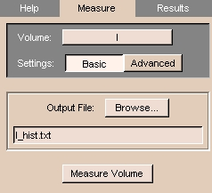 |
- Click the Measure tab. The panel at left appears.
- Select the image Volume whose geometric volume you want to measure.
- To include the entire image volume, click Basic.
Otherwise, to include only part of the image volume, click Advanced, then enter the upper and lower limits of slices in each of the three dimensions.
Only labels within these limits will count toward the geometric volume.
- To send the results of the volume measurement to an existing file, click Browse and select the file.
Otherwise, to specify a new file, enter the file name in the Output File field.
- Click Measure Volume.
When the volume has been measured, a window will appear.
To view the output file, click Yes.
Otherwise, click No.
The results appear on the Results tab.
|
Results tab
The Results tab displays the results of the volume measurement.
To use the Results tab:
| 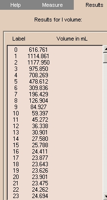 |
- Click the Results tab. The panel at left appears.
- Remember that you can have the results go to a file for later study, by specifying an Output File name on the Measure tab.
|
ModelCompare module
The ModelCompare module compares models with an identical number of nodes or displays any models.
This is useful for examining the similarities and differences among models that may have been altered without losing nodes.
There are two tabs: Correspond and Array Display.
Correspond tab
The Correspond tab lets you compare models with an identical number of nodes.
To use the Correspond tab:
| 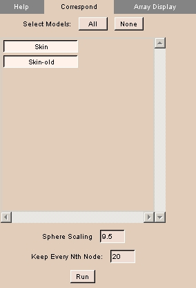 |
- Click the Correspond tab. The panel at left appears.
- To select all models, click All.
- To deselect all models, click None.
- To toggle models on or off, click the model's name.
- Enter Sphere Scaling, which is the sphere placed on the model when you run the correspondence. The calculation for the sphere's radius is .15 multiplied by the scaling factor.
- Enter value for Keep Every Nth Node.
- Click Run to compare selected models.
A comparision appears, showing corresponding nodes.
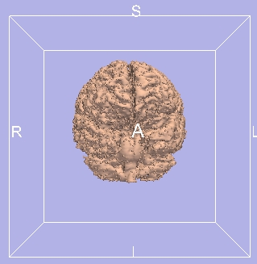
|
Array Display tab
The Array Display tab lets you display several models together.
NOTE: Models are translated for easy visualization.
To use the Array Display tab:
| 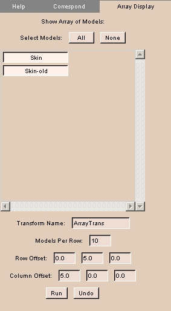 |
- Click the Array Display tab. The panel at left appears.
- To select all models, click All.
- To deselect all models, click None.
- To toggle models on or off, click the model's name.
- Enter Transform Name for this transform.
- Enter Models Per Row to display.
- Enter values for Row Offset and Column Offset.
- Click Run to perform the transform for display.
- Click Undo to undo the transform.
|
ModelHierarchy module
The ModelHierarchy module lets you view, create, and delete model hierarchies.
There is one tab: Hierarchy.
Hierarchy tab
The Hierarchy tab lets you view, create, and delete hierarchies.
To use the Hierarchy tab:
| 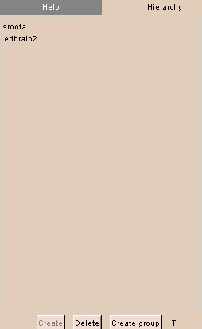 |
- Click the Hierarchy tab. The panel at left appears.
The current hierarchy, if any, of the current model appears.
- To create a new hierarchy for the current model, click Create.
A new hierarchy appears in the list.
- To create a new group in the hierarchy, click Create group.
A dialog appears. Enter the name of the new group, then click Ok.
A new group appears in the list.
- To delete the hierarchy, click Delete.
A dialog appears. Click Yes.
|
Navigator module
The Navigator module lets you navigate models in 3D Viewer, Endoscopic View, and Flattened View independently in a single display.
This is useful for observing structures in context.
There are two tabs: Navigate and Options.
Navigate tab
The Navigate tab lets you select the model and flattened view.
To use the Navigate tab:
| 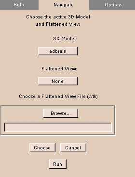 |
- Click the Navigate tab. The panel at left appears.
- To choose the 3D model to navigate, click 3D Model and select the model from the list.
- To choose a loaded flattened view to navigate, click Flattened View and select the view from the list.
- To load a flattened view, click Browse, then select the flattened view, then click Choose.
- Click Run to display the selected items.
- When the selected items appear, use the usual controls to navigate each display independently.
|
Options tab
The Options tab lets you specify which displays to retain after exiting.
To use the Options tab:
| 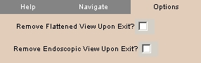 |
- Click the Options tab. The panel at left appears.
- To toggle hiding the Flattened View on exiting, click Remove Flattened View Upon Exit.
- To toggle hiding the Endoscopic View on exiting, click Remove Endoscopic View Upon Exit.
|